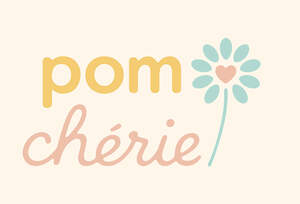

Trade Mark Journal No.2025/033 15 August 2025
UK00004243533 3 August 2025 (14,18,25,26)

- Class 14
- Brooches [jewellery]; Pins being jewelry; Finger rings; Imitation jewellery; Shoe jewellery; Plastic costume jewellery; Ornamental hat pins; Necklace charms; Silver-plated rings; Jewelry hat pins; Brooches [jewelry]; Enamelled jewellery; Brooches being jewelry; Jewellery; Drop earrings; Eternity rings; Body costume jewellery; Scarf clips being jewelry; Dress watches; Bracelets [jewellery, jewelry (Am.)]; Earrings; Costume jewellery; Platinum rings; Medallions [jewellery, jewelry (Am.)]; Pendants; Gold earrings; Bangles; Jewelry brooches; Charms [jewellery]; Rings [trinket]; Gold rings; Jewellery chain of precious metal for bracelets; Pendant watches; Silver bracelets; Silver-plated earrings; Jewellery items; Amulets [jewellery]; Jewelry charms; Costume jewelry; Cloisonné jewellery; Gold plated bracelets; Hoop earrings; Tie clips; Bracelets made of embroidered textile [jewelry]; Plastic bracelets in the nature of jewelry; Amulets being jewellery; Gold necklaces; Rings [jewelry]; Bracelets [jewellery]; Paste jewellery [costume jewelry (Am.)]; Pendants [jewellery]; Charms [jewelry]; Bracelet charms; Hat jewelry; Key charms [trinkets or fobs]; Bracelets [jewelry]; Bangle bracelets; Key rings [split rings with trinket or decorative fob]; Hat jewellery; Lapel pins [jewelry]; Bracelets made of embroidered textile [jewellery]; Engagement rings; Jewelry stickpins; Silver rings; Ankle bracelets; Amulets [jewellery, jewelry (Am.)]; Pins [jewelry]; LED finger ring watches; Bracelets and watches combined; Decorative brooches [jewellery]; Items of jewellery; Watch bracelets; Gold plated earrings; Clip earrings; Gold jewellery; Necklaces [jewelry]; Pearls [jewellery, jewelry (Am.)]; Rings [jewellery, jewelry (Am.)]; Pearls [jewelry]; Bracelets [charity]; Jade [jewellery]; Cloisonne jewellery; Bead bracelets; Gold-plated earrings; Jewellery rope chain for anklets; Silver necklaces; Rings being jewellery; Ornaments [jewellery, jewelry (Am.)]; Jewellery for personal adornment; Clips (Tie -); Hat ornaments of precious metal; Lockets [jewellery]; Cloisonné jewellery [jewelry (Am.)]; Gold-plated necklaces; Lockets [jewelry]; Jewelry clips for adapting pierced earrings to clip-on earrings; Pendants [jewelry]; Trinkets [jewellery]; Jewelry (Paste -) [costume jewelry]; Charms [jewellery, jewelry (Am.)]; Trinkets [jewellery, jewelry (Am.)]; Ear studs; Amulets [jewelry]; Jewellery brooches; Ornaments [jewellery]; Fashion jewellery; Silver-plated bracelets; Wooden bead bracelets; Imitation jewellery ornaments; Flexible wire bands for wear as a bracelet; Pierced earrings; Necklaces [jewellery]; Earrings of precious metal; Wedding rings; Bib necklaces; Bracelets for watches; Amberoid pendants being jewellery; Lockets [jewellery, jewelry (Am.)]; Charms for key rings; Jewellery stones; Clasps for jewelry; Dress ornaments in the nature of jewellery; Pewter jewellery; Ornaments (Hat -) of precious metal; Jewellery chain of precious metal for necklaces; Cuff links and tie clips; Pearls [jewellery]; Necklaces; Jewellery hat pins; Silver earrings; Charity bracelets; Jewellery, including imitation jewellery and plastic jewellery; Friendship bracelets; Brooches [jewellery, jewelry (Am.)]; Jewellery products; Jewel pendants; Bracelets of precious metal; Necklaces [jewellery, jewelry (Am.)]; Charms for jewelry; Pendants for watch chains; Jewellery charms; Paste jewellery [costume jewelry [Am.]]; Charms for jewellery; Jewellery rope chain for necklaces; Gold-plated rings; Clasps for jewellery; Identification bracelets [jewelry]; Wristlets [jewellery]; Charms; Silver-plated necklaces; Choker necklaces; Bracelets; Jewelry; Paste jewelry [costume jewelry]; Ear clips; Ring bands [jewellery]; Gold bracelets; Jewellery rope chain for bracelets; Rings [jewellery]; Jewelry pins for use on hats; Chains [jewellery, jewelry (Am.)]; Signet rings; Identification bracelets of precious metal [jewelry]; Amber pendants being jewellery.
- Class 18
- Equine boots; Wrist mounted carryall bags; Wallets (Pocket -); Sling bags; Purse frames; Small clutch purses; Shoe bags; Canvas bags; Coin purse frames; Change purses; Bucket bags; Duffel bags; Game bags; Belt bags; Small purses; Frames for coin purses [structural parts of coin purses]; Cross-body bags; Knitted bags; Bum bags; Evening purses; Purses [leatherware]; Drawstring bags; Luggage, bags, wallets and other carriers; Purse frames [handbags]; Chain mesh purses; Handbag straps; Pocket wallets; Card wallets [leatherware]; Coin holders; Clutch handbags; Wallets with card compartments; Wrist mounted purses; Carry-all bags; Duffel bags for travel; Crossbody bags; Leather coin purses; Leather wallets; Grocery tote bags; Knap sacks; Clutch purses; Purses, not of precious metal [handbags]; Cosmetic purses; Cloth bags; Coin purses; Straps for coin purses; Carrying bags; Luggage bags; Belt bags and hip bags; Clutches [purses]; Clutch purses [handbags]; Toiletry bags; Ruck sacks; Handbags, purses and wallets; Bags for umbrellas; Wheeled bags; Purses; Leather bags; Straps for handbags; Duffle bags; Clutch bags; Pocketbooks [handbags]; Tote bags; Leather bags and wallets; Multi-purpose purses; Bags; Fashion handbags; Leather purses; Carry-on bags; Bags for clothes.
- Class 25
- Knee-high stockings; Soccer shoes; Foot volleyball shoes; Cashmere scarves; Warm-up pants; Shoes soles for repair; Bootees (woollen baby shoes); Theatrical costumes; Pants; Fake fur hats; Trousers shorts; Small hats; Pajamas (Am.); T-shirts; Shirts; Dress suits; Dance slippers; High-heeled shoes; Skirt suits; Footless socks; Pullovers; Pedicure slippers; Toques [hats]; Gussets for tights [parts of clothing]; Boy shorts [underwear]; Lounging robes; Baseball caps and hats; Fleece tops; Snoods [scarves]; Waterproof boots; Jumpers [pullovers]; Bikinis; Insoles for footwear; Sheepskin jackets; Army boots; Jacket liners; Clothing; Tennis dresses; Sports shirts with short sleeves; Rainwear; Suit coats; Rainproof clothing; Shawls; Fingerless gloves; Miniskirts; Hats (Paper -) [clothing]; Gowns; Pleated skirts; Jogging tops; Masquerade and halloween costumes; Button down shirts; Pinafores; Rain trousers; Fur muffs; Christening gowns; Boots (Ski -); Headgear; Mountaineering gloves; Gloves [clothing]; Weatherproof pants; Sports caps and hats; Ballet slippers; Thermal socks; Stretch pants; Jogging outfits; Socks and stockings; Paper hats for wear by chefs; Ski gloves; Capri pants; Dress shirts; Ear muffs [clothing]; Caps [headwear]; Head scarves; Costumes for use in children's dress up play; Russian felted boots (Valenki); Turtleneck tops; Short petticoats; Pajama bottoms; Shawls [from tricot only]; Gloves; Nightgowns; Bathing caps; Jumper dresses; Boardshorts; Clothes; Beanie hats; Pyjamas; Shirt fronts; Ladies' dresses; Climbing boots [mountaineering boots]; Rain slickers; Reversible jackets; Leather dresses; Mitts [clothing]; Football boots; Tennis socks; Bed jackets; Headgear for wear; Cashmere clothing; Jogging pants; Yoga shirts; Sweatpants; Pedicure sandals; Gym shorts; Motorcycle gloves; Leather (Clothing of -); Teddies [underclothing]; Pyjamas [from tricot only]; Short-sleeved shirts; Lingerie; Crew neck sweaters; Ankle socks; Dresses made from skins; Clothing of leather; One-piece playsuits; Linen clothing; Shoes for leisurewear; Sandals; Teddies; Dresses for evening wear; Nurse dresses; Wind jackets; Tops [clothing]; Leather slippers; Ski suits; Denim pants; Scarves; Shawls and headscarves; Underskirts; Slipper socks; Swim caps; Playsuits [clothing]; Weatherproof jackets; Insoles for shoes and boots; Shorts [clothing]; Housecoats; Beach footwear; Sweatshirts; Ski hats; Maternity lingerie; Knitted caps; Ballet shoes; Sport shirts; Canvas shoes; Bridesmaid dresses; Baseball hats; Sleepwear; Ball gowns; Bandeaux [clothing]; Cagoules; Tennis shoes; Knit jackets; Wedding gowns; Beach clothes; Jogging sets [clothing]; Bodysuits; Swimsuits; Volleyball shoes; Bonnets [headwear]; Yoga pants; Snowboard mittens; Camouflage shirts; Sweat-absorbent stockings; Shirts and slips; Mufflers as neck scarves; Knit shirts; Swim briefs; Running Suits; Clothing for horse-riding [other than riding hats]; Cycling Gloves; Ballroom dancing shoes; Maternity underwear; Fascinator hats; Sliding shorts; Suspenders; Inner socks for footwear; Bib tights; Trousers for children; Gloves as clothing; Cowls [clothing]; Paper hats for use as clothing items; Fleece shorts; Woolen clothing; Woollen tights; Capes (clothing); Nighties; Trekking boots; Muffs; Shoe soles; Nightshirts; Ankle boots; Swim shorts; Top hats; Snowboard jackets; Beach clothing; Pantaloons; Sweat jackets; Tutus; Fittings of metal for boots and shoes; Bridal gowns; Waterproof jackets; Shell jackets; Fur coats and jackets; Desert boots; Leggings [leg warmers]; Bath slippers; Non-slip socks; Climbing boots; Booties; Sleep masks; Veils [clothing]; Pullstraps for shoes and boots; Rubber shoes; Tracksuits; Party hats [clothing]; Caps being headwear; Heel pieces for stockings; Boots for motorcycling; Men's and women's jackets, coats, trousers, vests; Mountaineering boots; Sweatbands; Jogging suits; Mufflers [neck scarves]; Rain boots; Snowboard shoes; Ski trousers; Furs [clothing]; Gym suits; Riding trousers; Trews; Sweat shirts; Boots for sport; Aprons [clothing]; Tennis shirts; Eye masks; Jerseys [clothing]; Collars [clothing]; Flip-flops for use as footwear; Bath sandals; Mitres [hats]; Sleeveless pullovers; Long sleeve pullovers; Cloche hats; Pinafore dresses; Clothing for gymnastics; Rugby boots; Wristbands [clothing]; Masks (Sleep -); Sneakers; Fashion hats; Hoods [clothing]; Mukluks; Bib shorts; Pop socks; Play suits; Culotte skirts; Sun hats; Slip-on shoes; Jumpers [sweaters]; Wind-resistant jackets; Headbands; Scarfs; Swimming suits; Hiking shoes; Water-resistant clothing; Heel protectors for shoes; Sandal-clogs; Hooded pullovers; Water socks; Sweaters; Dress shoes; Paper hats [clothing]; Legwarmers; Stockings [sweat-absorbent]; Chemisettes; Culottes; Jump Suits; Tracksuit bottoms; Jumper suits; Infantwear; Waterproof pants; Jeans; Trouser straps; Toe socks; Imitation leather dresses; Neck scarfs [mufflers]; Walking shoes; Fleece vests; Baby sandals; Neck scarves; Fur hats; Garments for protecting clothing; Maternity shirts; Clothing layettes; One-piece suits; Swimwear; Snowboard trousers; Soccer shirts; Turtleneck shirts; Maternity pants; Sweat suits; Denims [clothing]; Hats; Corduroy shirts; Wooden shoes [footwear]; Tank-tops; Boots; Innersocks; Lumberjackets; Polo knit tops; Basketball shoes; Après-ski boots; Riding gloves; Polo sweaters; Board shorts; Jumpers; Maternity clothing; Stiffeners for boots; Sweat-absorbent socks; Riding boots; Slipper soles; Nightdresses; Short-sleeved T-shirts; Horse-riding pants; Sailor suits; Knitted gloves; Earmuffs; Shirts for suits; Gymwear; Leggings [trousers]; Military boots; Camouflage gloves; Miters [hats]; Evening gowns; Shapewear; Slacks; Shoes; Belts [clothing]; Slippers made of leather; Trouser socks; Stockings; Sneakers [footwear]; Leather shoes; Jackets [clothing]; Thong sandals; Collared shirts; Tennis shorts; Embroidered clothing; Footless tights; Hooded sweatshirts; Jogging bottoms [clothing]; Fancy dress costumes; Swim trunks; Jackets; Beach hats; Bridesmaids wear; Stockings (Heel pieces for -); Rain hats; Costumes; Gabardines [clothing]; Leisure suits; Soles for footwear; Button-front aloha shirts; Face mask [clothing]; Sundresses; Underclothes; Hosiery; Rain jackets; Tongues for shoes and boots; Night gowns; Dance clothing; Overtrousers; Waterproof trousers; Bermuda shorts; V-neck sweaters; Fingerless gloves as clothing; Maillots [hosiery]; Dress pants; Snowboard boots; Short trousers; Headshawls; Sleep shirts; Shoes for foot volleyball; Neck scarves [mufflers]; Sports pants; Gloves for cyclists; Galoshes; Winter gloves; Leather clothing; Unitards; Insoles [for shoes and boots]; Trousers; Knitted baby shoes; Handwarmers [clothing]; Tankinis; Bucket hats; Leather jackets; Leg-warmers; Suede jackets; Ear warmers; Over-trousers; Lounge pants; Ski boots; Chefs' hats; Shift dresses; Pantyhose; Sleeved jackets; Rainproof jackets; Cycling shoes; Aloha shirts; Boxer shorts; Plastic slippers; Rain wear; Esparto shoes or sandles; Woolly hats; Tracksuit tops; Ready-to-wear clothing; Leather pants; Gymnastic shoes; Baby doll pyjamas; Romper suits; Sleeveless jerseys; Layettes [clothing]; Bandanas [neckerchiefs]; Hunting boots; Knitwear [clothing]; Suits; Dance costumes; Athletic shoes; Capelets; Fleece pullovers; Mock turtleneck shirts; Tights; Bathrobes; Paper hats for wear by nurses; Foam pedicure slippers; Snowsuits; Weatherproof clothing; Rain capes; Pique shirts; Collars for dresses; Camouflage jackets; Sportswear; Body suits; Fleeces; Neckerchieves; Mittens; Bathing suit cover-ups; Cocktail dresses; Polo neck jumpers; Ballet suits; Corsets [clothing, foundation garments]; Knitwear; Disposable slippers; Kerchiefs [clothing]; Sports socks; Night shirts; Muffs [clothing]; Slippers; Corduroy trousers; Sunsuits; Suits (Bathing -); Knit tops; Platform shoes; Shirt yokes; Silk scarves; Infants' trousers; Football shirts; Ladies' sandals; Shoulder scarves; Running shoes; Footwear soles; Blouses; Neck tube scarves; Beach shoes; Apres-ski shoes; Rain ponchos; Camouflage pants; Skirts; Wooden shoes; Dungarees; Dressing gowns; Walking shorts; Hiking boots; Bathing costumes; Cardigans; Briefs [underwear]; Head sweatbands; Ushankas [fur hats]; Baby boots; Esparto shoes or sandals; Trunks (Bathing -); Thermal headgear; Winter boots; Riding Gloves; Sports shoes; Blouson jackets; Jogging shoes; Sleep pants; Wind-jackets; Warm-up suits; Bathing costumes for women; Underpants; Casual trousers; Swimming costumes; Socks; Work boots; Flip-flops; Hooded sweat shirts; Shorts; Snow boots; Long sleeved vests; Polo boots; Turtleneck pullovers; Quilted jackets [clothing]; Stockings (Sweat-absorbent -); Sweatshorts; Dresses; Fur jackets; Windproof clothing; Anklets [socks]; Bathing drawers; Windcheaters; Woollen socks; Rain suits; Knickers; Women's ceremonial dresses; Face masks [fashion wear]; Surfwear; Beachwear; Maternity sleepwear; Underwear; Bathing trunks; Knitted tops; Knitted underwear; Snowboard gloves; Camouflage vests; Swimming caps; Wellington boots; Fleece jackets; Waterproof shoes; Headbands against sweating; Skating outfits; Rain shoes; Open-necked shirts; Swim wear for children; Yoga socks; Bodices [lingerie]; Casual shirts; Leotards; Undergarments; Ponchos; Raincoats; Zoot suits; Corduroy pants; Parts of clothing, footwear and headgear; Bathing suits; Knee warmers [clothing]; Padded jackets; Teddies [undergarments]; Socks for infants and toddlers; Underwear for women; Gym boots; Wedding dresses; Cycling pants; Ear muffs; Polar fleece jackets; Heel pieces for shoes; Dance shoes; Chemise tops; Fedoras; Rain coats; Camiknickers; Fitted swimming costumes with bra cups; Nightwear; Mock turtleneck sweaters; Jogging bottoms; Petticoats; Women's foldable slippers; Bed socks; Turtleneck sweaters; Short-sleeve shirts; Denim jeans; Evening dresses; Tennis skirts; Ear warmers being clothes; Kerchiefs; Headbands [clothing]; Cheongsams (Chinese gowns); Swimming trunks; Bobble hats; Halloween costumes; Yoga shoes; Long-sleeved shirts; Bomber jackets; Oilskins [clothing]; Babies' pants [underwear]; Sandals and beach shoes; Walking boots; Ski jackets; Half-boots; Yokes (Shirt -); Maternity dresses; Silk clothing; Nappy pants [clothing]; Windproof jackets; Underpants for babies; Headbands for clothing; Anti-perspirant socks; Pleated skirts for formal kimonos (hakama); Shawls and stoles; Knitted clothing; Valenki [felted boots]; Boots for sports; Swim suits; Trousers of leather; Horse-riding boots; Trousers for sweating; Wearable blankets in the nature of blankets with sleeves; Lace boots; Pajamas; Quilted vests; Hoodies; Polo shirts; Beanies; Sleeveless jackets; Monokinis; Denim jackets; Athletic tights; Aqua shoes; Soccer boots; Gloves for apparel.
- Class 26
- Brooches [clothing accessories]; Hair curlers; Hair tassel ornaments for Japanese hair styling (negake); Hair curl clips; Twisters [hair accessories]; Ornamental hair pins for Japanese hair styling (kogai); Hair (Plaited -); Hair (Tresses of -); Plaited hair; Hair fasteners; Hair ribbons for Japanese hair styling (tegara); Hair elastics; Hair grips [slides]; Elasticated hair bands; Top-knots [pompoms]; Brooches for clothing; Hair pins; Hair tassel strings for Japanese hair styling (motoyui); Pins; Waving pins for the hair; Snap clips [hair accessories]; Hair weaves; Ponytail holders and hair ribbons; Hair barrettes; Hair grips; Elasticated hair ribbons; Charms [not jewellery or for keys, rings or chains]; Scarf clips not being jewelry; Ribbons for the hair; Bows for the hair; Grips for the hair; Hair ornaments; Clips for clothing; Hat ornaments; Hair rollers; Hair pins and grips; Laces for shoes; Hair pieces; Hair wraps; Sticks for use in styling the hair; Slides [hair grips]; Hat pins, other than jewellery; Hair ornaments, hair rollers, hair fastening articles, and false hair; Ornaments for the hair; Charms, other than for jewelry, key rings or key chains; Oriental hair pins; Hair tresses; Hat ornaments, not of precious metal; Hair extensions; Hat bands; Hair ornaments in the nature of hair wraps; Hair ribbons; Tresses of hair; Elastic for tying hair; Ornaments (Hat -), not of precious metal; Barrettes; Hair scrunchies; Hair curling pins; Clam clips for hair; Hairbands; Hat pins for securing hats; Feathers [clothing accessories]; Hair twisters [hair accessories]; Scrunchies; Plaits of hair; Hat trimmings; Hair buckles; Hair curling papers; Laces for boots; Ornaments (Hair -); Hair decorations; Papers (Hair curling -); Hair slides; Rubber or silicone charm accessory for shoes; Hair bows; Pins, other than jewelry; Hair clips; Claw clips [hair accessories]; Pigtail ribbons for Korean hair style (Daeng-gi); Pins for the hair.
PEACE OF MIND .925 LTD